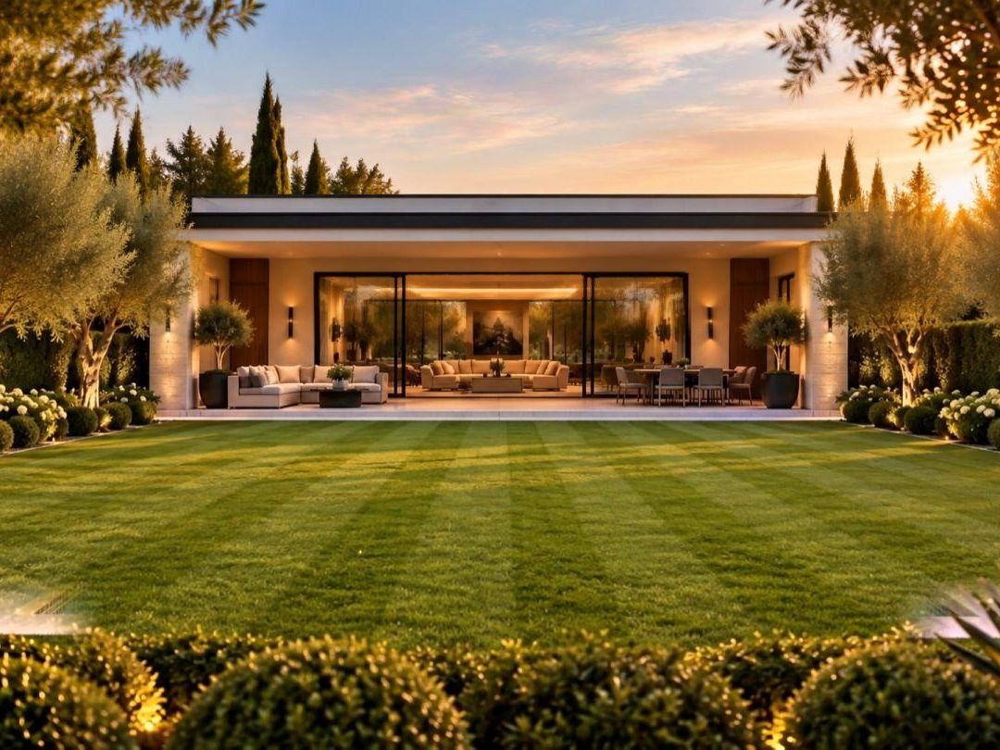
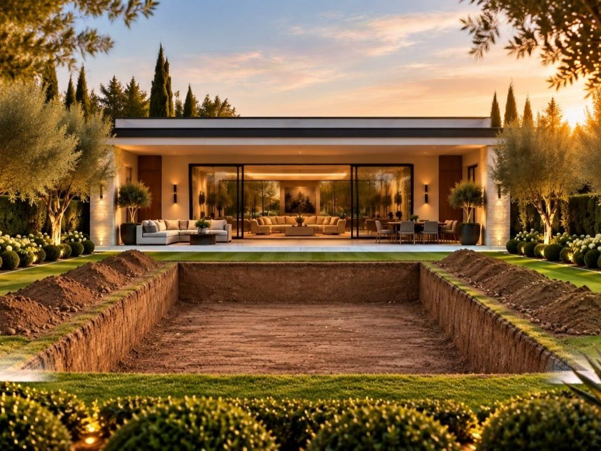
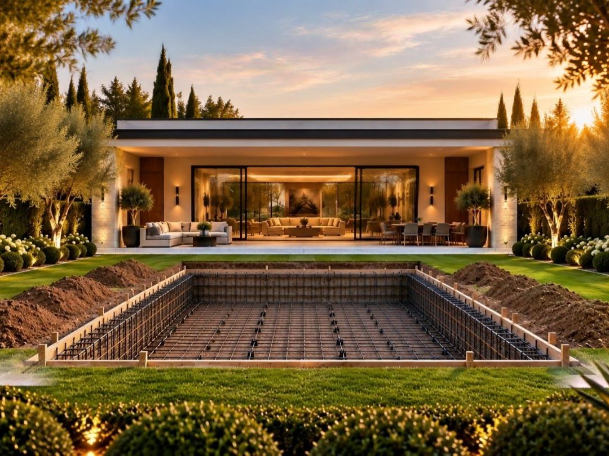
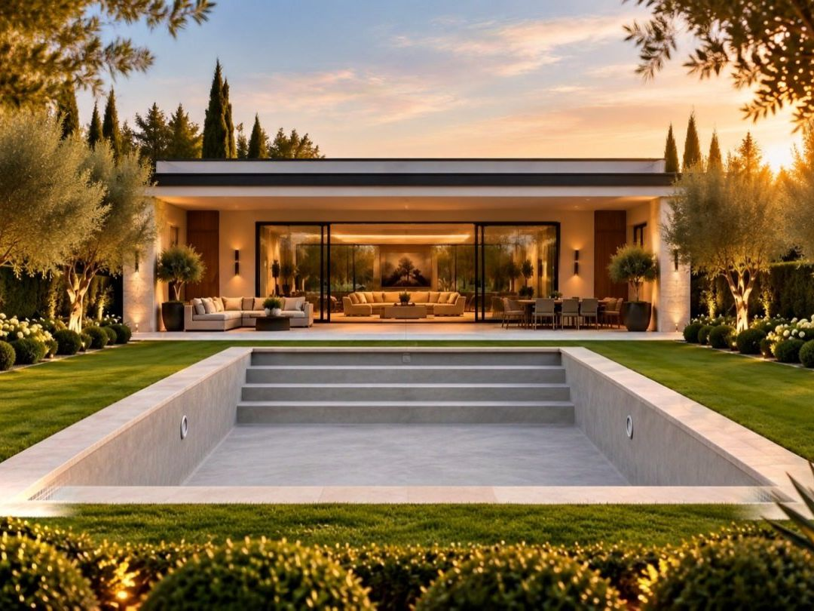
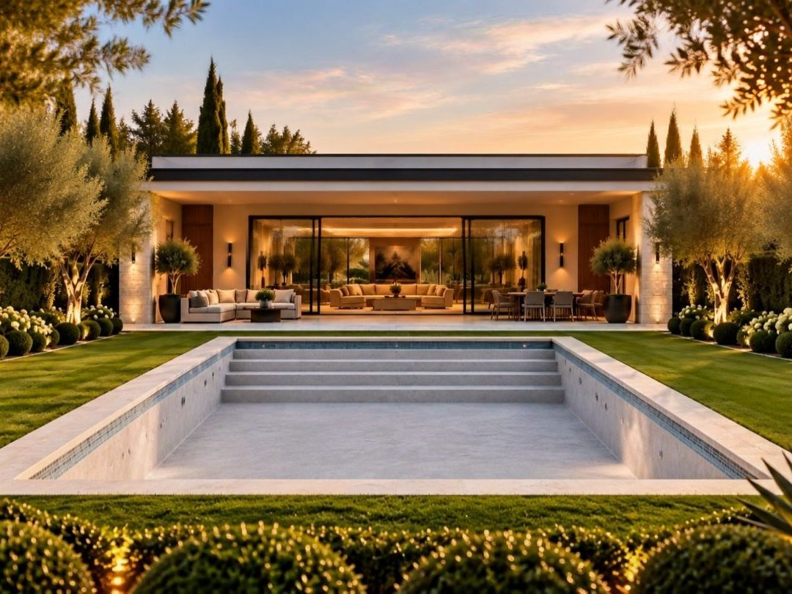
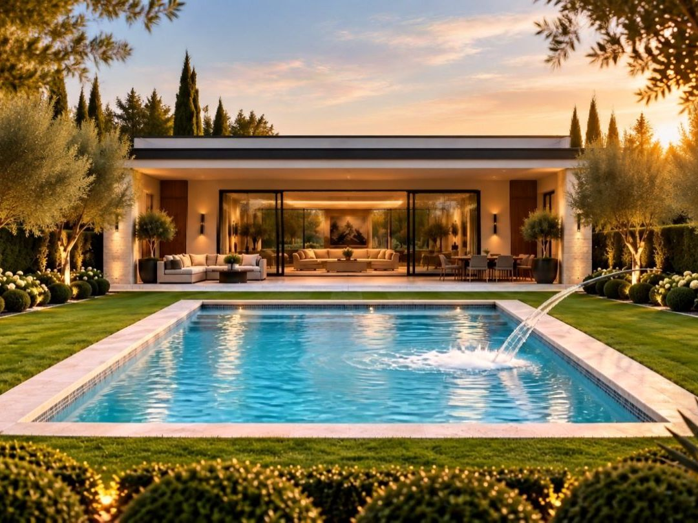

לפני העבודה · 2–3 שבועות
תכנון והדמיה 01
ביקור בשטח, בדיקת קרקע ומדידות. אחרי שבועיים מקבלים הדמיה תלת־ממדית של החצר ומחיר סגור. מה שרואים בהדמיה הוא מה שנבנה, ואת ההיתר אנחנו מגישים ומלווים עד הסוף.

עשרה שבועות בשטח, שישה שלבים, ומחיר שסוגרים לפני שהמחפרון מגיע. ככה זה עובד אצלנו, וזה בערך מה שזה עולה.
כל שלב נבדק ונחתם לפני שעוברים לבא, ובסוף כל שבוע מקבלים תמונות מהשטח.
ביקור בשטח, בדיקת קרקע ומדידות. אחרי שבועיים מקבלים הדמיה תלת־ממדית של החצר ומחיר סגור. מה שרואים בהדמיה הוא מה שנבנה, ואת ההיתר אנחנו מגישים ומלווים עד הסוף.

מסמנים את קווי הבריכה על הקרקע, חופרים לפי המלצת המהנדס ומפנים את העפר באותו היום. אם אין גישה לכלים, מביאים מנוף.

כלוב זיון לפי תכנית הקונסטרוקציה, צנרת, הכנות לתאורה ולחימום. המהנדס בודק וחותם לפני כל יציקה.

יציקת בטון מזוין בשלב אחד, כולל מדרגות הכניסה. אחרי היציקה השלד מתייבש ונבדק לאטימות.

טיח, פסיפס בעבודת יד וחיפוי אבן טבעית. השפה מונחת בגובה הדשא או הריצוף, בלי מדרגה מיותרת.

מילוי, איזון המים והפעלת המערכות. 72 שעות של בדיקות, הדרכה מלאה למשפחה, ואז הקפיצה הראשונה.

בחרו מידות, גמר ותוספות. ההערכה מתעדכנת מיד, ואפשר לשלוח לנו את התצורה ולקבל מחיר סגור אחרי ביקור בשטח.
שלחו לנו את התצורה מהמחשבון או כמה מילים על החצר. נחזור תוך יום עסקים כדי לתאם ביקור בשטח.